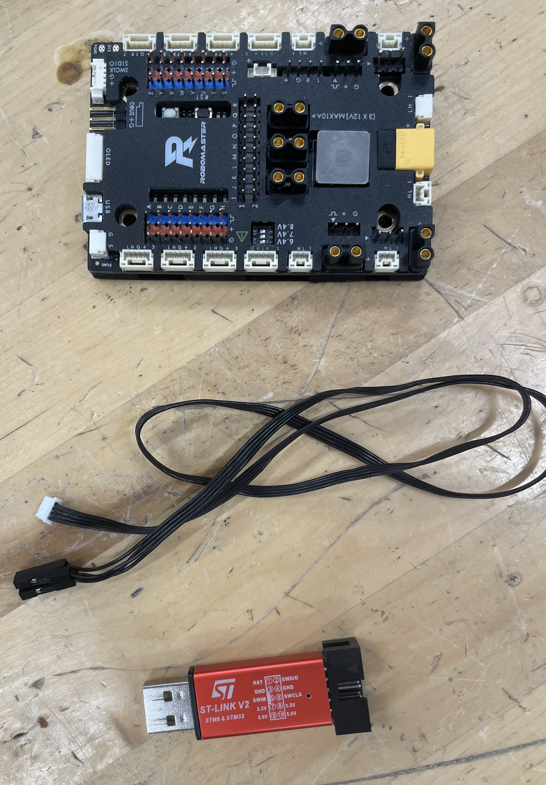
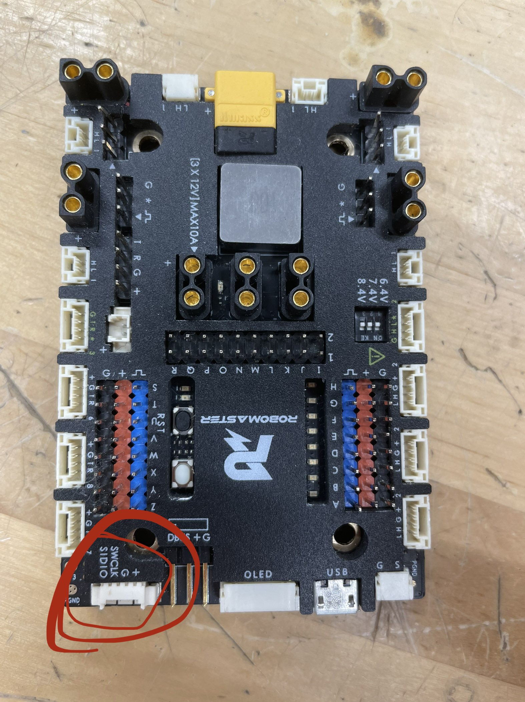
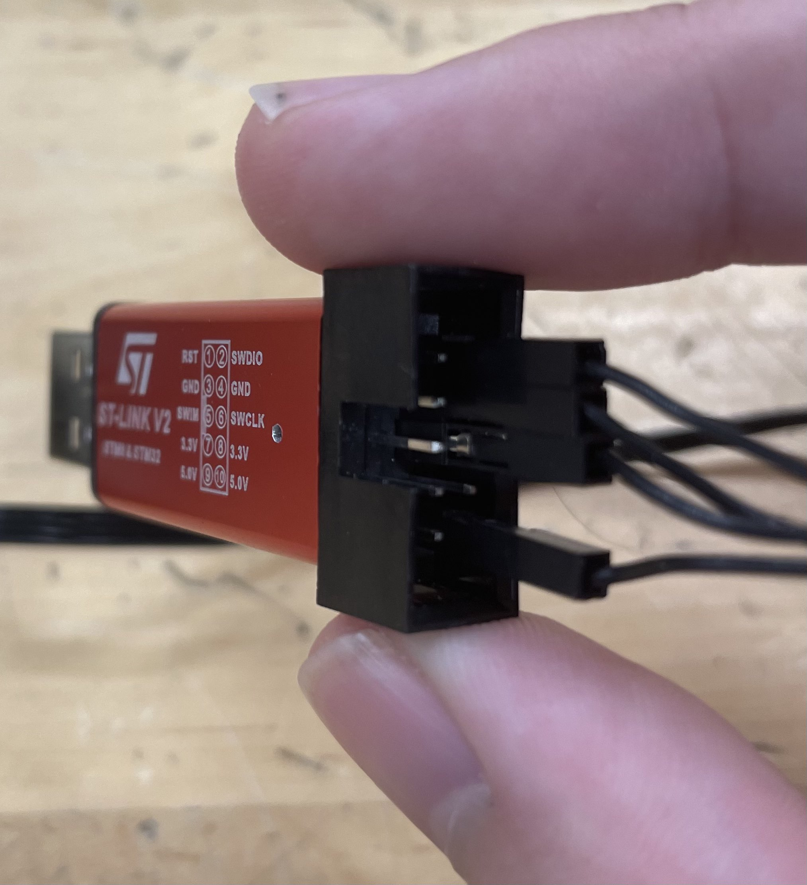
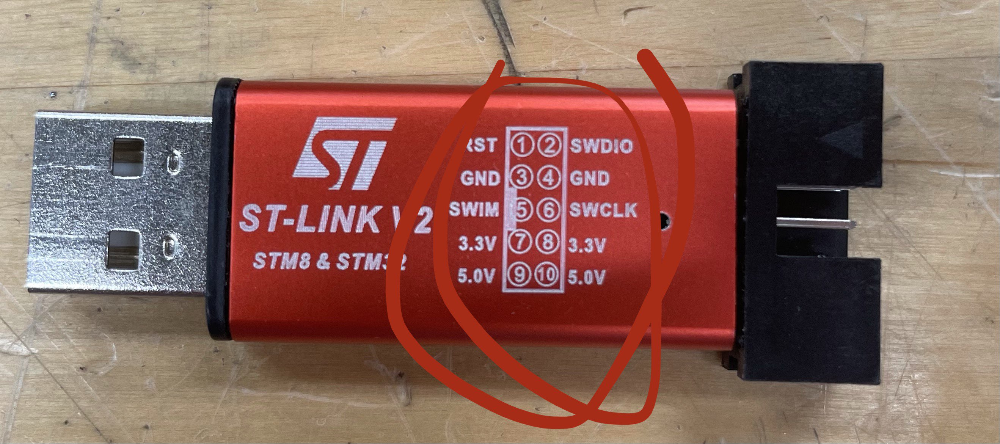
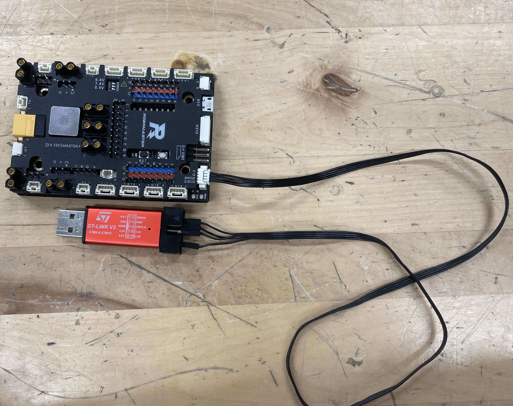

Step 1
Gather your Type A Board, your ST-Link, and your funny 4-pin cable!

Step 2
plug in your funny cable 4 pin to the circled port!

Step 3
follow each wire from the label on the board and connect it to the pin on the ST-Link.
There should be a diagram on the ST-Link that shows which pin is which. Plug in the
corresponding pins (+ -> 3.0V, G -> GND, etc). IMPORTANT: The photo here is WRONG. It's plugged in to 5 volts, when it should be in the 3 volt port. I'll update the photo later lol.

Step 4
You're done. should look like this!
